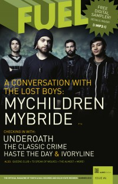
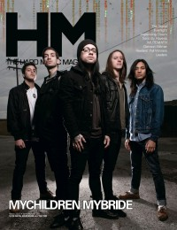

MyChildren MyBride
|  |
| Summer 2010 FUEL |
 |
| March 2012 HM |
Media coverage:
- Spr 2007 in Uprise Zine "Featured Bands: MyChildren MyBride"
- Mar 2008 in HM "MyChildren MyBride", by Nathan Doyle
- Sum 2010 in FUEL "MyChildren MyBride"
- May 2010 in HM "MyChildren MyBride", by Daniel Garcia
- Mar 2012 in HM "Hardnews: Quick & Concise: MyChildren MyBride Offer Interactive Maze"
- Mar 2012 in HM "MCMB: Catching the Sound", by Impending Doom
- Apr 2012 in HM "Live Report: SXSW 2012, March 10-17", by Clutch
- Apr 2012 in HM "Poster: MyChildren MyBride (Matthew Hasting)"
- Apr 2012 in CCM Digital "The Fringe: MyChildren MyBride", by Andy Argyrakis
Albums & reviews:
2008: Unbreakable
- Mar 2008 in HM, by Tim Hallila
- Spr 2008 in Uprise Zine, by Lloyd Harp
- Feb 2012 in HM, by Tim Hallila
- Jul 2010 in HM, by Nathan Doyle
- Mar 2012 in HM, by Daniel Garcia
- Apr 2012 in CCM Digital, by Matt Conner
Published articles:

© 2011 CMnexus. Last updated December 2020. Contact: editor -AT- cmnexus -DØT- org About